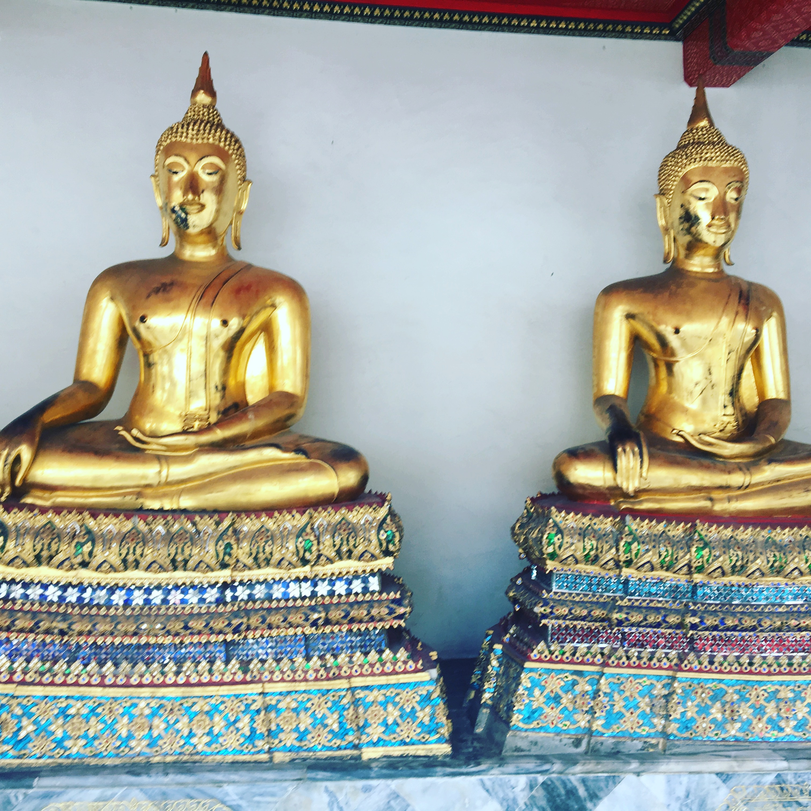
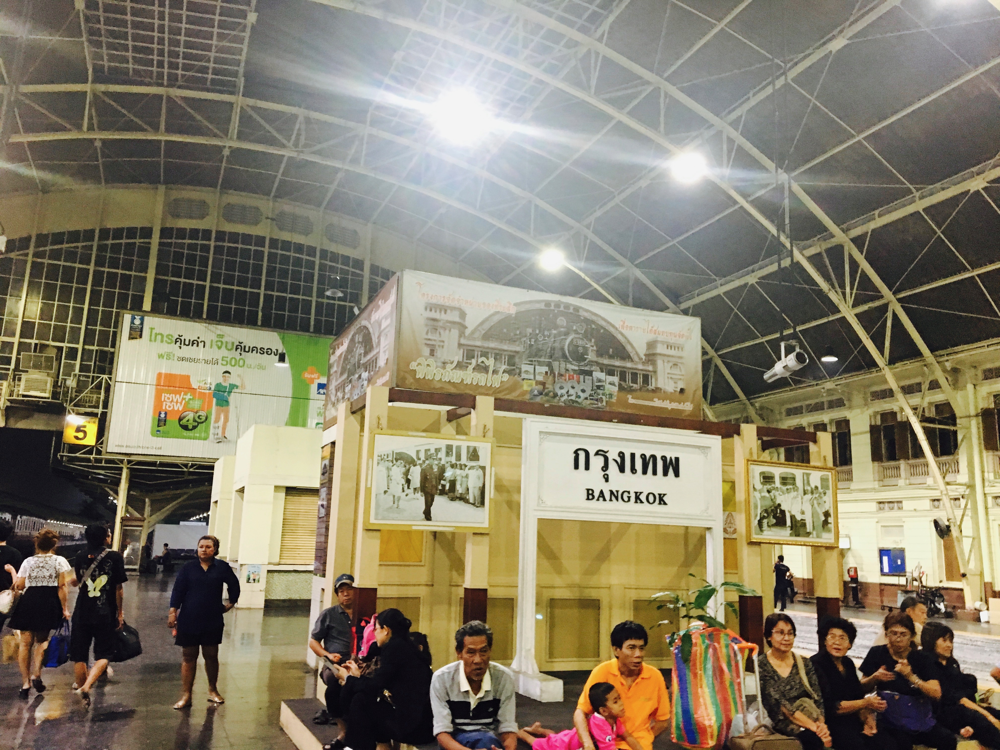

The Khlong Lat Mayom floating market is an authentic market where tourists can be counted on the fingers of the hand. In fact, this floating market is organized in 2 parts located on one side of the street. On the left side arriving from Bangkok you will find stalls selling typical fruits and vegetables and a little bit more "textile / souvenirs" with handmade items.
Wat Pho in Bangkok was a nice surprise during our Thailand getaway. Imagine a little, an elongated Buddha 46 meters long, we had never seen that before! But it's not just the elongated Buddha to see at Wat Pho ... it's gone for the visit!
Hua Lamphong Station, is the main railway station of Bangkok, capital of Thailand. It is located in the center of the city, in the district of Pathum Wan. It is controlled by the State Railways of Thailand.